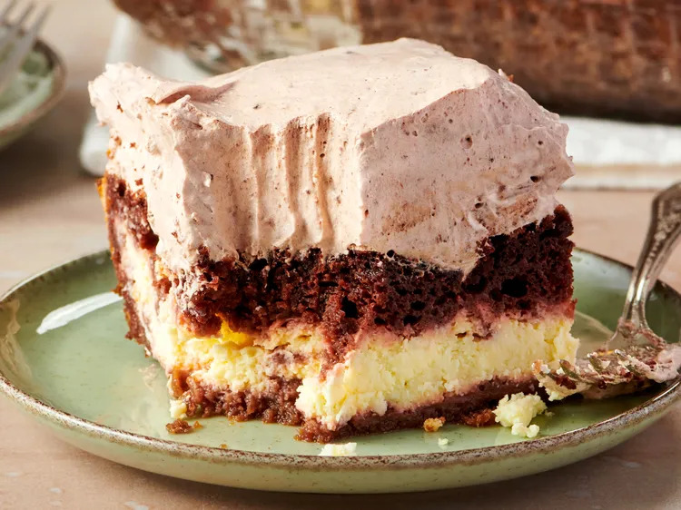

Italian Love Cake

Description
Italian love cake is a decadent layered dessert featuring rich chocolate cake and a creamy ricotta filling. During baking, the layers magically switch places, creating a unique texture. Topped with smooth chocolate pudding frosting, it’s moist, indulgent, and perfect for celebrations, offering a delightful blend of flavors and textures.
Ingredients
- 1 package (15.25 ounce) chocolate cake mix
- 1 cup water
- 7 large eggs, divided
- ½ cup vegetable oil
- 2 pints part-skim ricotta cheese
- ¾ cup white sugar
- 1 teaspoon vanilla extract
- 1 package (3.9 ounce) instant chocolate pudding mix
- 1 cup milk
- 1 container (12 ounce) frozen whipped topping, thawed
Steps
- Preheat the oven to 350 degrees F (175 degrees C). Lightly grease a 9x13-inch baking dish.
- Combine cake mix, water, 3 eggs, and oil in a large bowl; beat with an electric mixer until well combined, about 2 minutes. Pour batter into prepared baking dish. Set aside.
- To make the ricotta cheese layer: Combine ricotta cheese, sugar, vanilla, and remaining 4 eggs in a separate bowl; blend well. Spread ricotta mixture evenly over the top of the cake batter.
- Bake in the preheated oven until or toothpick inserted in the center comes out clean, about 1 hour 15 minutes if using a glass baking dish, or 1 ½ hours if using a metal pan. Allow cake to cool completely before topping.
- To make the topping: Blend pudding mix and milk until thickened. Blend in whipped topping. Spread over cooled cake.
- Enjoy!
Home